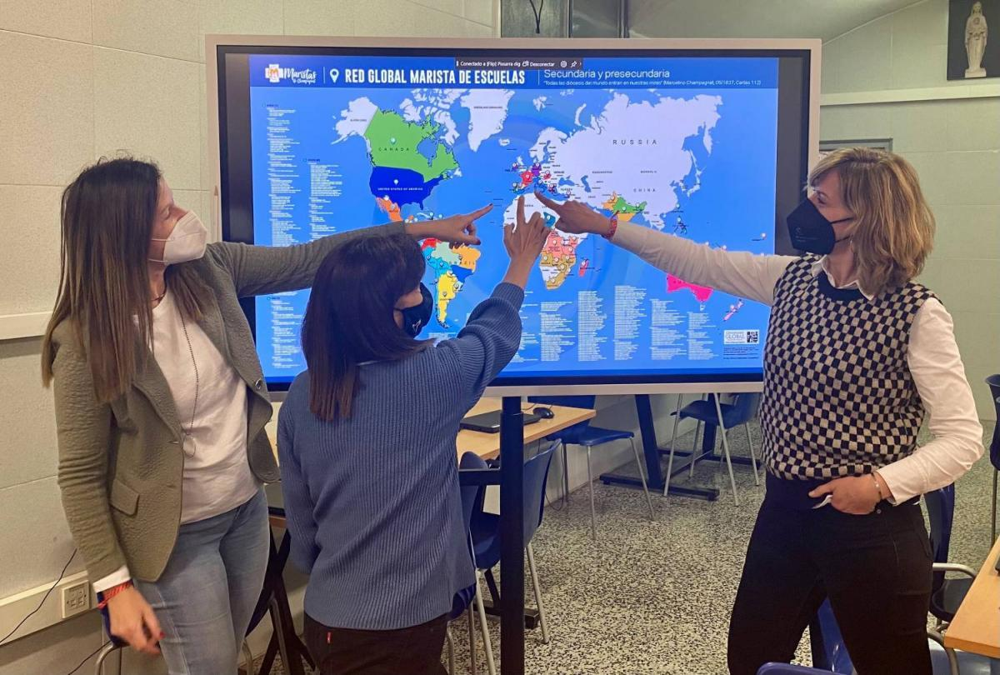

Volunteer Service
"Sharing life and mission through transformative encounter."
Mission of Encounter
"The volunteer experience is not just about what you give, but what you receive through encounter with others."
Marist Volunteers (MVs) are lay people who wish to share the life and mission of the Marist Brothers for a specific period. They live in community and serve in various educational and social projects across the East Asia Province and outside the Province.
Marist volunteering is an effective way of building a culture of encounter between nations and peoples; it is a powerful tool for sharing knowledge, skills and values, contributing significantly to poverty reduction. All parties involved (the sender, the receiver and the volunteer) are connected and guided by, well-defined roles and agreements.
If you are interested in Marist Inter-provincial Volunteering, you can contact the Provincial Volunteer Coordinator (CPV).
Br. Edgar R. Ceriales, FMS
Province Volunteer Coordinator
LOCAL Volunteerism
Serving within your own community allows for deep, long-term impact in familiar contexts. Our local volunteers contribute to Marist schools, youth centers, and community programs that empower the youth in their own neighborhoods.
- Support in Marist educational institutions
- Engagement in local parish youth ministries
- Volunteer in socio-educational social centers
- Volunteer in local mission areas of the Marist Brothers
Places to Volunteer (Local)
Located in General Santos City, NDDU offers diverse volunteering opportunities in higher education, community outreach, and social development programs.
A premier Basic Education institution in Metro Manila, where volunteers engage in student formation, campus ministry, and community service.
Serving the South Cotabato region, NDMU provides platforms for social transformation through research-based community extension services.
INTERNATIONAL Volunteerism
Step beyond borders to share life and mission in international Marist communities. This transformative experience focuses on interculturality, global solidarity, and serving the most neglected children and youth across the East Asia Province.
Inter-Provincial
Opportunities across East Asia and the wider Marist world.
Social Projects
Dedicated service in Marist mission centers globally.
Available Mission Sites (International)
A unique opportunity to engage in community life and support youth ministry activities in our long-standing Kobe community.
Participate in the vibrant youth ministry and intercultural mission and educational works within the dynamic context of Seoul.
Contribute to the educational and social missions of the Marist Brothers in Sarawak, focusing on community development and youth growth.
